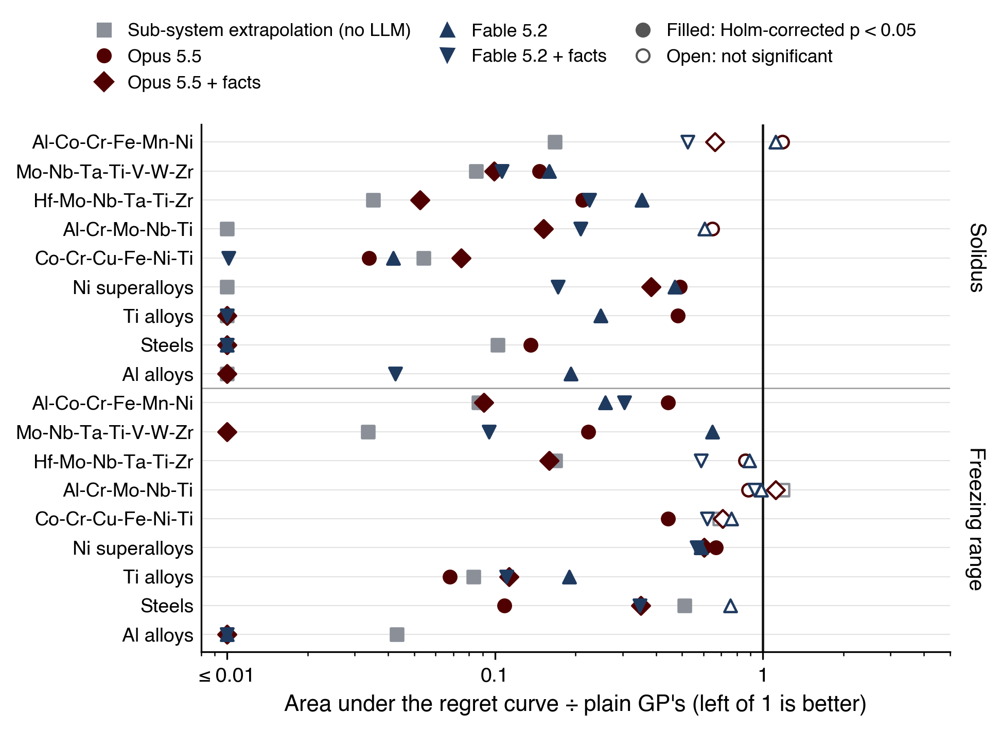

MATERIALS SCIENCE & ENGINEERING
TEXAS A&M UNIVERSITY
Department of Materials Science and Engineering
56

Better than plain GP, of 18
extrapolation: 16
Opus 5.5: 14, with facts 15
Fable 5.2: 12, with facts 14
worse: none
filled marker: Holm p < 0.05